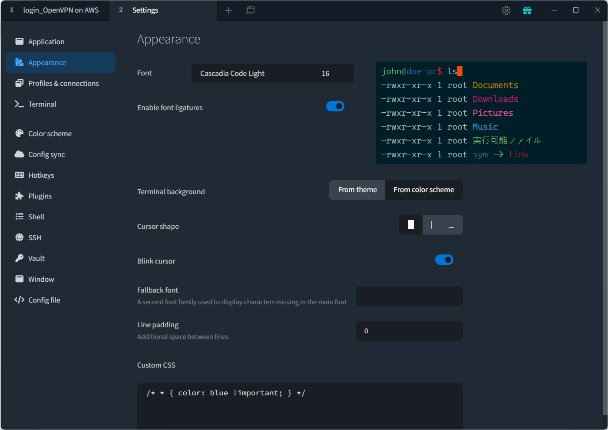

Day-2_每天要盯著看的畫面當然要賞心悅目！- Work with terminal
在成為工程師的路上，從一開始搞懂純文字的CLI指令，到後來慢慢熟悉不同的Linux作業系統以外，印象最深刻的就是一般內建的終端機畫面都醜爆了，尤其是Windows10的原生cmd視窗…，還有在GCP上跑GCE的VM時，瀏覽器的彈出式Terminal真的不太好用…😅 不過長期使用Windows的我，在去年升級到Windows 11以後，對他改版後的PowerShell/CMD/WSL Terminal滿意度大大加分，視覺上的設定、字體、顏色和透明度都可以調整，其實已經好用很多了。
之前曾經在公司看過同事可以毫無障礙的使用最傳統的黑白終端機，幾乎是預設值，字有夠小，字體也醜醜的，居然可以長期使用，真心覺得佩服！🤣
總之我還是會被美美的、有設計過的東西吸引目光，所以有一陣子我的休閒就是在調各種Terminal的設定、下載各種連線工具試用，到後來小研究後才找到我喜歡順手的工具。後來才發現，很多工程師也喜歡調這些設定，畢竟每天要盯著看好久，把這些東西設定到賞心悅目，就是爽啊！
今天我想來就先來分享一些我自己喜歡的連線工具和終端機設定吧！如果你也有些好東西也歡迎留言跟我分享～
Win11終端機自訂色彩
升級以後的終端機使用者體驗比起win10，我個人覺得Win11實在好太多了！
簡單設定後長這樣子
當然可以用單色背景，不過我愛微透明背景，騷包就是讚～
找到設定的選項

選擇色彩配置
設定好系統色彩後記得儲存
選擇設定項目後往下捲到底選外觀
這邊就選命令提示字元

外觀細節設定
進入外觀設定後有一堆可以調的，上方貼心顯示預覽畫面，色彩配置可以選你剛剛挑好的顏色組合。確認好你喜歡的字型和字體大小後，就差不多了。
想要騷包的透明背景可以調整背景不透明度玩玩看，好了按儲存。
 新開一個你設定的項目分頁就已經生效囉！是不是蠻簡單的？
新開一個你設定的項目分頁就已經生效囉！是不是蠻簡單的？
Tabby Terminal
Tabby (https://tabby.sh)是我用Windows時期最喜歡的Terminal連線工具，大推！他除了有超多內建的配色主題以外，也可以存你常連線的機器資訊，而且不止SSH過去的IP位址，登入帳號/密碼或private key都可以直接設定儲存，用這個以後要SSH連線超省事的，跟平常用瀏覽器很像，開一個新分頁就連好了，效率好很多！
設定總覽
安裝完成後打開，點右上角的齒輪進入設定

外觀與字體設定
我自己蠻喜歡Cascadia Code系列的字體，容易閱讀，這點微軟Good Job! 
超多內建配色可以慢慢挑
這邊有個小撇步，挑到喜歡的配色可以編輯黨名，我是在名字前面加數字，這樣常用的幾款可以存到最上面，之後就不用再找很久了。
重點來了：SSH連線設定
點New Profile設定新的連線

可以存密碼或私鑰
如果你有很多遠端server需要連線管理，或是開了很多不同的VM跑服務，這個功能超棒的，還可以把不同機器分組放。
連線！
設定完成後，之後只要點標籤頁加號右邊的這個按鈕就可以選擇連線了

自動跑SSH真的是很省事呀！
題外話
BTW後來工作中用了Macbook以後，整個被MacOS各種視覺上和設計上的細節燒到，最後自己也入坑加入Mac的行列了，如果有人還在猶豫要不要換Mac，我現在都直接無情推坑了🤣🤣🤣
我現在常用的terminal長這樣: